library(tidyverse)
library(readr)
library(FactoMineR)
library(factoextra)Master M & O Dauphine : Inside Airbnb
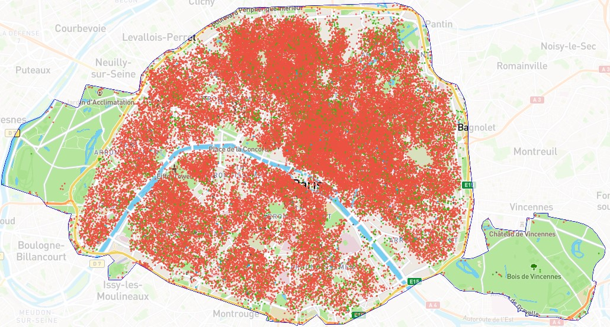
Les packages
lecture du fichier et recodage
Le fichier Listing représente les logements présents sur la plateforme vers le 12 /13 décembre 2023. On en sélectionne quelques variables.
listings <- read_csv("listings.csv") %>%
select(id,
host_id,
host_name,
host_about,
number_of_reviews,
first_review,
price,
beds,
room_type,
review_scores_rating,
review_scores_accuracy,
review_scores_cleanliness ,
review_scores_checkin,
review_scores_communication ,
review_scores_location,
review_scores_value,
neighbourhood_cleansed
)%>%
mutate(price_n=as.numeric(substr(price,2, stop=nchar(price)))) #à expliquer comment on recode le prixUn premier graphique
La distribution des prix par types de logement
ggplot(listings, aes(x=price_n))+
geom_histogram(fill="pink")+
scale_x_log10()+
facet_wrap(vars(room_type), scale="free", ncol=2)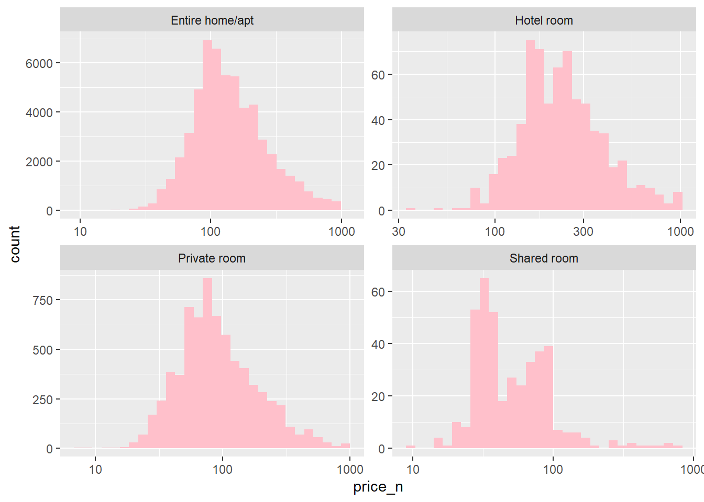
Les prix par arrondissement
foo<-listings %>%
group_by(neighbourhood_cleansed)%>%
summarise(n=n(),
price_mean=mean(price_n,na.rm=TRUE),
sd=2*sd(price_n, na.rm=TRUE)/sqrt(n-1))
px<- round(mean(listings$price_n,na.rm=TRUE),2)
ggplot(foo, aes(x=reorder(neighbourhood_cleansed, price_mean), y=price_mean))+
geom_point(stat="identity")+
coord_flip()+
labs( title = paste0("Prix Airbnb à paris : ", px))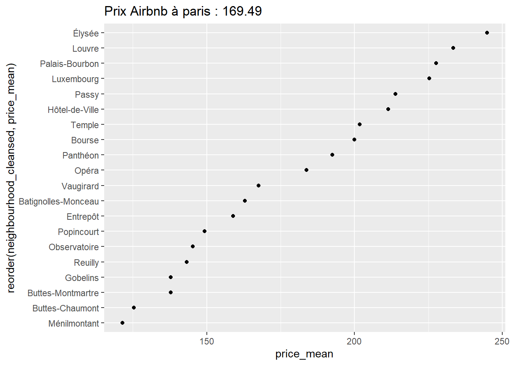
Un test de comparaison de moyenne
Une anova
fit <-lm(price_n~neighbourhood_cleansed+room_type, listings)
anova(fit)Analysis of Variance Table
Response: price_n
Df Sum Sq Mean Sq F value Pr(>F)
neighbourhood_cleansed 19 79716288 4195594 232.99 < 2.2e-16 ***
room_type 3 23791125 7930375 440.38 < 2.2e-16 ***
Residuals 65535 1180151101 18008
---
Signif. codes: 0 '***' 0.001 '**' 0.01 '*' 0.05 '.' 0.1 ' ' 1Le modèle de régression
summary(fit)
Call:
lm(formula = price_n ~ neighbourhood_cleansed + room_type, data = listings)
Residuals:
Min 1Q Median 3Q Max
-239.06 -74.36 -36.17 26.03 866.83
Coefficients:
Estimate Std. Error t value Pr(>|t|)
(Intercept) 167.951 2.035 82.518 < 2e-16
neighbourhood_cleansedBourse 36.003 3.441 10.462 < 2e-16
neighbourhood_cleansedButtes-Chaumont -33.947 2.971 -11.428 < 2e-16
neighbourhood_cleansedButtes-Montmartre -25.976 2.562 -10.140 < 2e-16
neighbourhood_cleansedÉlysée 80.007 3.588 22.298 < 2e-16
neighbourhood_cleansedEntrepôt -2.972 2.821 -1.054 0.2921
neighbourhood_cleansedGobelins -21.472 3.560 -6.032 1.63e-09
neighbourhood_cleansedHôtel-de-Ville 47.384 3.532 13.415 < 2e-16
neighbourhood_cleansedLouvre 69.454 4.006 17.339 < 2e-16
neighbourhood_cleansedLuxembourg 60.613 3.702 16.375 < 2e-16
neighbourhood_cleansedMénilmontant -39.781 3.001 -13.257 < 2e-16
neighbourhood_cleansedObservatoire -13.667 3.402 -4.018 5.88e-05
neighbourhood_cleansedOpéra 22.274 3.114 7.153 8.57e-13
neighbourhood_cleansedPalais-Bourbon 62.461 3.771 16.565 < 2e-16
neighbourhood_cleansedPanthéon 28.687 3.561 8.056 8.02e-16
neighbourhood_cleansedPassy 50.280 2.973 16.913 < 2e-16
neighbourhood_cleansedPopincourt -14.000 2.677 -5.230 1.70e-07
neighbourhood_cleansedReuilly -17.473 3.320 -5.263 1.43e-07
neighbourhood_cleansedTemple 37.017 3.209 11.534 < 2e-16
neighbourhood_cleansedVaugirard 5.407 2.788 1.939 0.0525
room_typeHotel room 71.655 5.125 13.982 < 2e-16
room_typePrivate room -51.025 1.698 -30.041 < 2e-16
room_typeShared room -97.509 6.687 -14.583 < 2e-16
(Intercept) ***
neighbourhood_cleansedBourse ***
neighbourhood_cleansedButtes-Chaumont ***
neighbourhood_cleansedButtes-Montmartre ***
neighbourhood_cleansedÉlysée ***
neighbourhood_cleansedEntrepôt
neighbourhood_cleansedGobelins ***
neighbourhood_cleansedHôtel-de-Ville ***
neighbourhood_cleansedLouvre ***
neighbourhood_cleansedLuxembourg ***
neighbourhood_cleansedMénilmontant ***
neighbourhood_cleansedObservatoire ***
neighbourhood_cleansedOpéra ***
neighbourhood_cleansedPalais-Bourbon ***
neighbourhood_cleansedPanthéon ***
neighbourhood_cleansedPassy ***
neighbourhood_cleansedPopincourt ***
neighbourhood_cleansedReuilly ***
neighbourhood_cleansedTemple ***
neighbourhood_cleansedVaugirard .
room_typeHotel room ***
room_typePrivate room ***
room_typeShared room ***
---
Signif. codes: 0 '***' 0.001 '**' 0.01 '*' 0.05 '.' 0.1 ' ' 1
Residual standard error: 134.2 on 65535 degrees of freedom
(8771 observations effacées parce que manquantes)
Multiple R-squared: 0.08063, Adjusted R-squared: 0.08033
F-statistic: 261.3 on 22 and 65535 DF, p-value: < 2.2e-16Le diagramme des effets marginaux
(un exercice : recoder les arrondissement par leur numéro)
library(jtools)
summ(fit)MODEL INFO:
Observations: 65558 (8771 missing obs. deleted)
Dependent Variable: price_n
Type: OLS linear regression
MODEL FIT:
F(22,65535) = 261.27, p = 0.00
R² = 0.08
Adj. R² = 0.08
Standard errors: OLS
-----------------------------------------------------------------------------
Est. S.E. t val. p
--------------------------------------------- -------- ------ -------- ------
(Intercept) 167.95 2.04 82.52 0.00
neighbourhood_cleansedBourse 36.00 3.44 10.46 0.00
neighbourhood_cleansedButtes-Chaumont -33.95 2.97 -11.43 0.00
neighbourhood_cleansedButtes-Montmartre -25.98 2.56 -10.14 0.00
neighbourhood_cleansedÉlysée 80.01 3.59 22.30 0.00
neighbourhood_cleansedEntrepôt -2.97 2.82 -1.05 0.29
neighbourhood_cleansedGobelins -21.47 3.56 -6.03 0.00
neighbourhood_cleansedHôtel-de-Ville 47.38 3.53 13.41 0.00
neighbourhood_cleansedLouvre 69.45 4.01 17.34 0.00
neighbourhood_cleansedLuxembourg 60.61 3.70 16.37 0.00
neighbourhood_cleansedMénilmontant -39.78 3.00 -13.26 0.00
neighbourhood_cleansedObservatoire -13.67 3.40 -4.02 0.00
neighbourhood_cleansedOpéra 22.27 3.11 7.15 0.00
neighbourhood_cleansedPalais-Bourbon 62.46 3.77 16.56 0.00
neighbourhood_cleansedPanthéon 28.69 3.56 8.06 0.00
neighbourhood_cleansedPassy 50.28 2.97 16.91 0.00
neighbourhood_cleansedPopincourt -14.00 2.68 -5.23 0.00
neighbourhood_cleansedReuilly -17.47 3.32 -5.26 0.00
neighbourhood_cleansedTemple 37.02 3.21 11.53 0.00
neighbourhood_cleansedVaugirard 5.41 2.79 1.94 0.05
room_typeHotel room 71.66 5.12 13.98 0.00
room_typePrivate room -51.02 1.70 -30.04 0.00
room_typeShared room -97.51 6.69 -14.58 0.00
-----------------------------------------------------------------------------effect_plot(fit, pred = neighbourhood_cleansed)+coord_flip()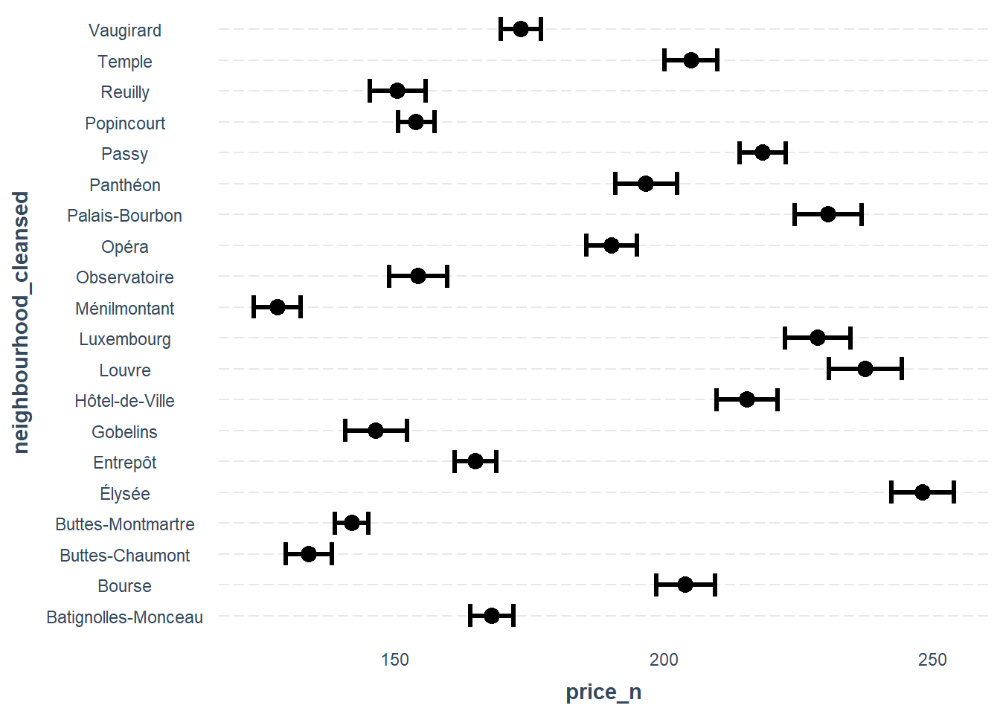
Un graphique plus sophistiqué
foo<-listings %>%
group_by(neighbourhood_cleansed, room_type)%>%
summarise(n=n(),
price_mean=mean(price_n,na.rm=TRUE),
sd=2*sd(price_n, na.rm=TRUE)/sqrt(n-1))
ggplot(foo, aes(x = reorder(neighbourhood_cleansed, price_mean),y=price_mean))+
geom_bar(stat="identity", aes(fill=log10(n)))+
geom_errorbar(aes(ymin=price_mean-sd, ymax=price_mean+sd), width=.2,
position=position_dodge(.9)) +
coord_flip()+
labs(title = "Prix moyens des locations par arrondissement",
x=NULL,
y =" Average price")+
scale_fill_gradient(low="yellow", high="darkblue")+
facet_wrap(vars(room_type), scale="free")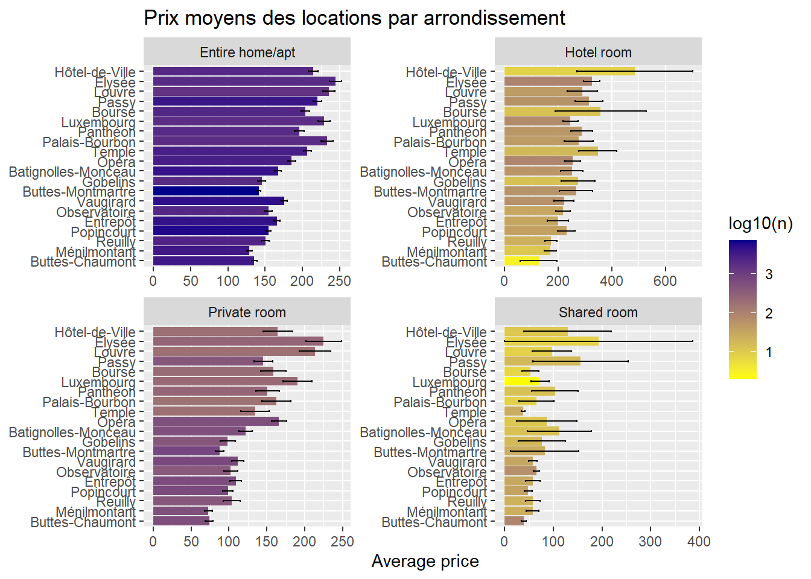
Examinons les notes
foo<- listings %>%
select(id,
review_scores_rating,
review_scores_accuracy,
review_scores_cleanliness,
review_scores_checkin,
review_scores_communication,
review_scores_location,
review_scores_value) %>%
drop_na()
foo1 <- foo %>%
pivot_longer(-id, names_to = "Critères", values_to = "Note")%>%
group_by(Critères)%>%
summarise(Note=mean(Note,na.rm=TRUE))
ggplot(foo1,aes(x=reorder(Critères, Note), y= Note) )+
geom_point(stat="identity")+
coord_flip()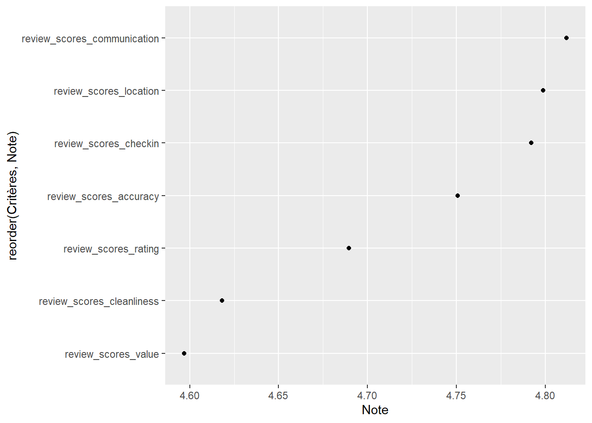
Examinons les corrélations des notes
foo<-foo %>%
select(-id)
r<-cor(foo)
library(ggcorrplot)
ggcorrplot(r, hc.order = TRUE,
type = "lower",
outline.col = "white",
ggtheme = ggplot2::theme_gray,
colors = c("#6D9EC1", "white", "#E46726"))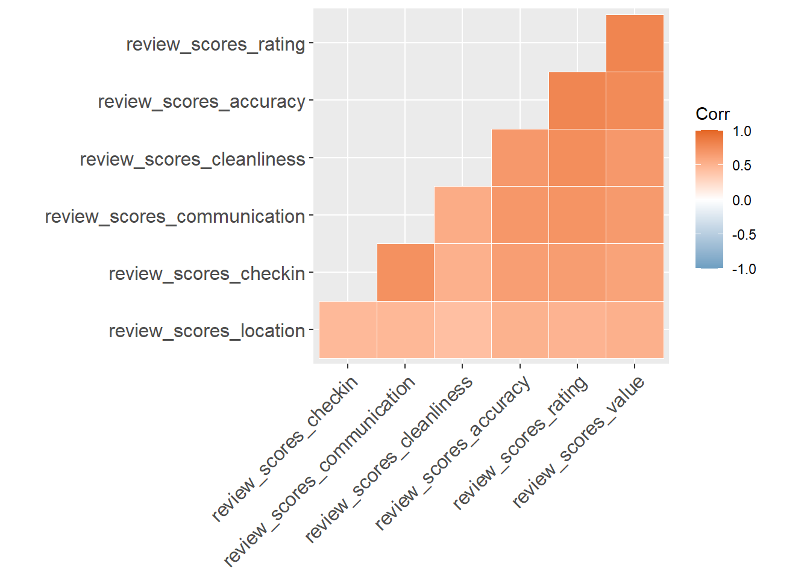
Partons pour une Analyse en Composantes Principales
res.pca <- PCA(foo, ncp=2, graph = FALSE)
fviz_pca_var(res.pca, col.var = "contrib",
gradient.cols = c("white", "blue", "red"),
ggtheme = theme_minimal())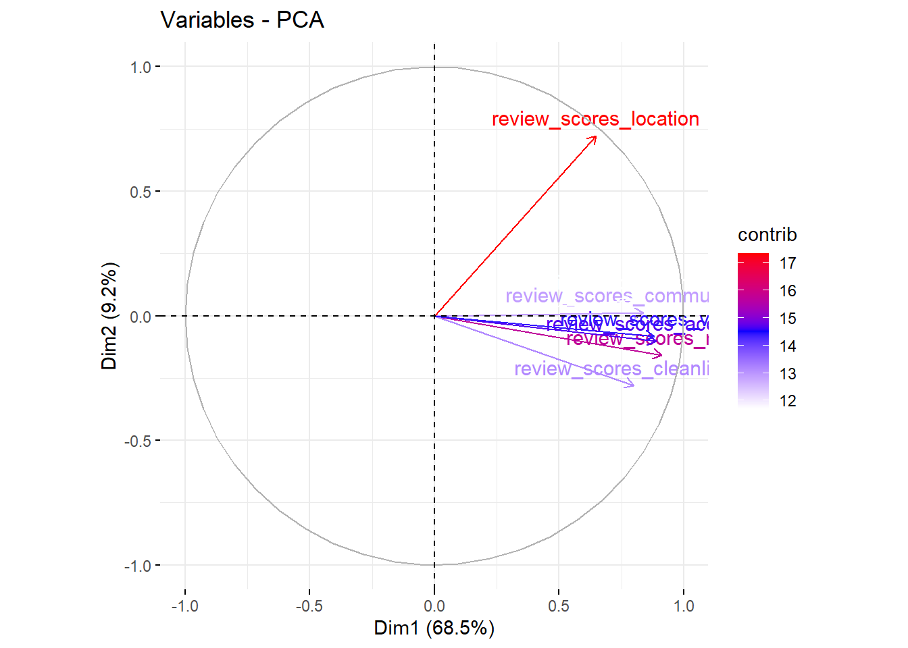
Et enchainons avec un clustering
On emploie une méthode brutale : K-means
#on récupère les scores des individus
ind<-res.pca$ind$coord
# le nombre de groupe a priori
k<- 7
# Calculer k-means avec k
set.seed(123)
res.km <- kmeans(ind, k, nstart = 25)
# Clustering K-means montrant le groupe de chaque individu
foo1<-cbind(foo,res.km$cluster )%>%
rename(cluster=8)
foo1$cluster<- as.character(foo1$cluster)
ggplot(foo1,aes(x=review_scores_rating, review_scores_location ))+
geom_point(aes(color=cluster))+
scale_color_manual(values=c("orange", "pink", "grey", "skyblue" ,"green", "red", "purple" ))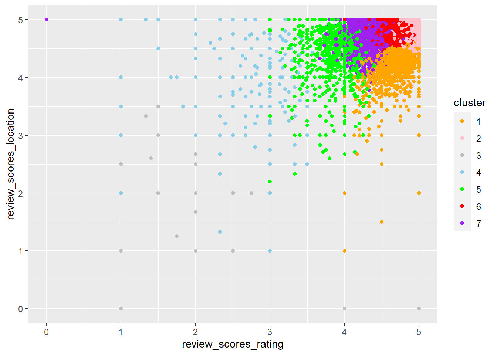
Un étude des prénoms
library(ggwordcloud)
# attribution table ( large but not so reliable!)
NamesOut <- read_table("NamesOut.txt", col_names = FALSE)%>%
rename(surname=X1, gender =X2)
#plus de finesse en isolant le premier mot, et en identifiant les couples ( & et)
foo<- listings %>%
group_by(host_name)%>%
summarise(n=n()) %>%
arrange(desc(n))%>%
mutate(surname=word(host_name,1))%>% #on prend le premier mot de la séquence
left_join(NamesOut) %>%
mutate(Genre=ifelse(is.na(gender),"Société", gender), #on identifie ce qui n'est pas un prénom donc une société
Genre=ifelse(str_detect(host_name, "\\s[et, ET, &]\\s"), "Couple", Genre))%>%
filter(n>30)
ggplot(foo, aes(x = Genre, y = n)) +
geom_bar(stat="identity") + coord_flip()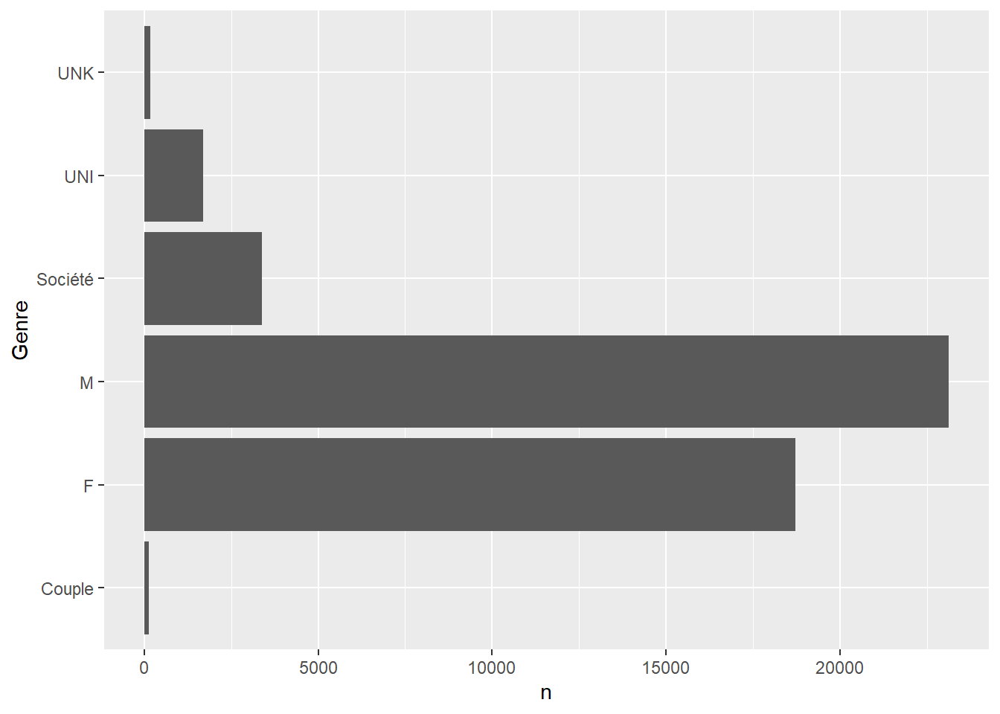
ggsave("./images/prenoms1.jpg", width = 27, height = 20, units = "cm")le prénom des loueurs
foo <- foo %>%
filter(Genre %in% c("M","F", "Société" ) )
ggplot(foo, aes(label = surname, size = n)) +
geom_text_wordcloud(aes(size=n,color=Genre)) +
scale_size_area(max_size = 8) +
theme_minimal()+
facet_wrap(vars(Genre), ncol=3)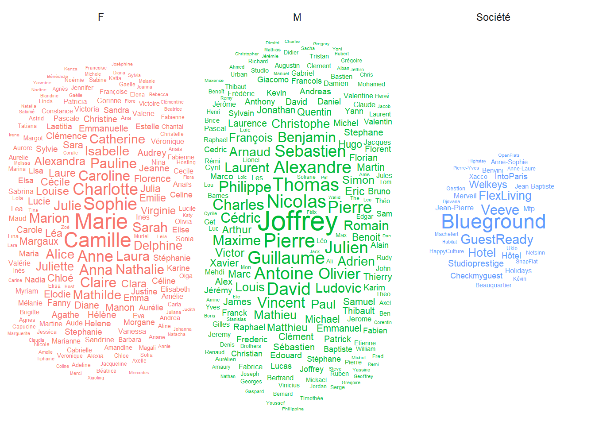
ggsave("./images/prenoms2.jpg", width = 27, height = 20, units = "cm")